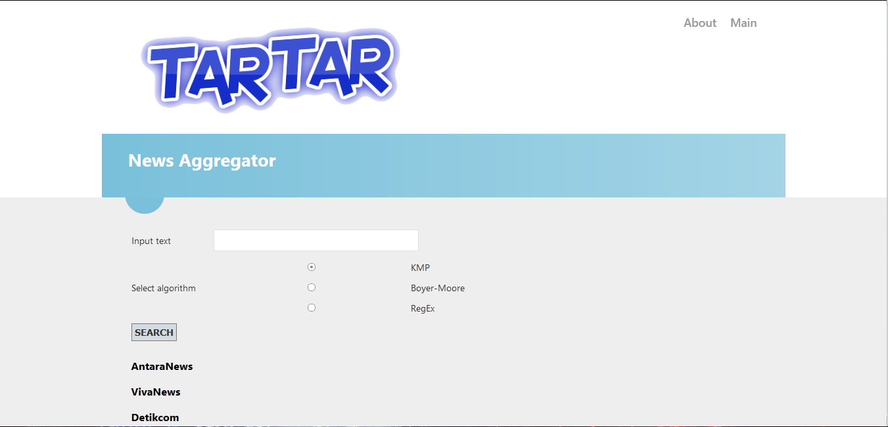

Taufan Mahaputra
Future Software Engineer

Future Software Engineer
These are my portfolios, including work-projects, side-projects, course-projects, and anything else I love to develop it hehe.
HTML / C# / ASP.NET RAZOR
A news aggrerator web that crawling for certain sources. And provided with feature Search using several algorithms such as KMP, Boyer-Moore, and RegEx; implmented with C#.
HTML / CSS / JSP / JAVA SERVLET / SOAP JAX-WS / MYSQL / FIREBASE CLOUD MESSAGING / NODE.JS / EXPRESS / MONGO DB / ANGULAR JS

A web likes GO-RIDE with functionality sign-up, login, profile, order, history, and even chatting. Using REST Service Java Servlet and Node.js. Also provided Real-Time Chatting with Firebase Cloud Messaging, and stores that history chat with MongoDB.
HTML / CSS / FLASK / SCIKIT-LEARN

A web predictor that retrieves form data and process it to target data. Using Flask Web Framework as a Back-End and Jinja for rendering. This website uses Artificial Intelligence Library; Scikit-Learn to predict the output.
HTML / CSS / LARAVEL 5.4 / ALGOLIA / PARSEHUB / MYSQL

A web-based application that is a feature of the latest music row in Indonesia from various sources. With this app, search for a row of music can be done quickly and updated to make it easier for users.
ANGULAR / IONIC 3 / FIREBASE

A mobile application built by Ionic 3 Framework. App likes GO-FOOD and till now it's serverless. Back-end is provided by Firebase, connected with AngularFire.